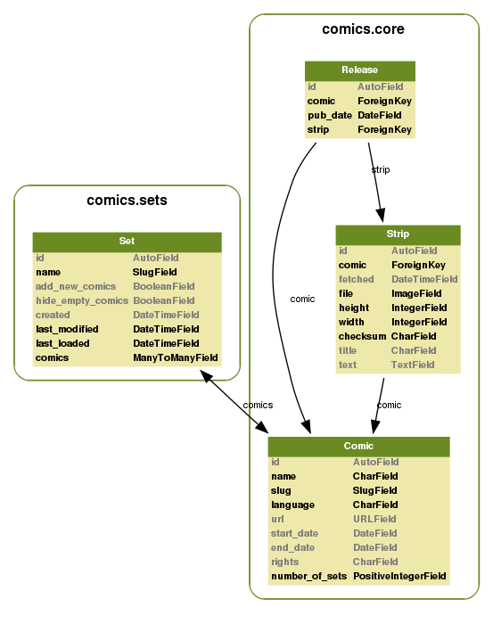

comics development is coordinated through GitHub and the IRC channel #dailycomics at irc.freenode.net.
The easiest way to contribute to comics is to register as a user at GitHub, fork the comics project, and start hacking. To get your changes back into comics‘ mainline, send a pull request to jodal at GitHub, or send a mail to comics@jodal.no. Patches accompanied by tests and documentation gives +5 karma and kudos. When hacking on comics, please follow the code style and commit guidelines below.
All contributions must be granted under the same license as comics itself.
Follow PEP 8 unless otherwise noted. pep8.py can be used to check your code against the guidelines, however remember that matching the style of the surrounding code is also important.
Use four spaces for indentation, never tabs.
Use CamelCase with initial caps for class names:
ClassNameWithCamelCase
Use underscore to split variable, function and method names for readability. Don’t use CamelCase.
lower_case_with_underscores
Use the fact that empty strings, lists and tuples are False and don’t compare boolean values using == and !=.
Follow whitespace rules as described in PEP 8. Good examples:
spam(ham[1], {eggs: 2})
spam(1)
dict['key'] = list[index]
Limit lines to 80 characters and avoid trailing whitespace. However note that wrapped lines should be one indentation level in from level above, except for if, for, with, and while lines which should have two levels of indentation:
if (foo and bar ...
baz and foobar):
a = 1
from foobar import (foo, bar, ...
baz)
For consistency, prefer ' over " for strings, unless the string contains '.
Take a look at PEP 20 for a nice peek into a general mindset useful for Python coding.
comics‘ data model is very simple. The comics.core app consists of three models; Comic, Release, and Strip. The comics.sets app adds an additional model named Set. Changes to the data model are managed using South database migrations. If you need to change the models, please provide the needed migrations.
The above data model diagram was generated using the Django app django_extensions and the following command:
python manage.py graph_models --settings=comics.settings.dev \
--output=../docs/static/data_model.png --group-models \
core sets
comics got some tests, but far from full test coverage. If you write new or improved tests for comics‘ functionality it will be greatly appreciated.
To run unit tests:
python manage.py test --settings=comics.settings.testing
To run unit tests with statement coverage:
python manage.py test --settings=comics.settings.coverage
When planning or doing larger changes to comics, notes may be added to the documentation as a change specification.
A loosely prioritized list of things to fix. Patches accepted.